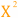
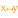
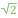
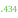

Dataflow Blocks Reference
Various blocks are available for creating your dataflow model. When you open the dataflow view, the blocks palette appears at the left of the dataflow window and contains blocks available to your dataflow model.
Variables
| Block | Icon | Description |
|---|---|---|
| String | Holds values as a sequence of characters | |
| Number | Holds values that describe a measurable quantity as a number | |
| Boolean | Holds values that can be only TRUE or FALSE | |
| Color | Holds values that describe a solid, gradient, or image fill that can be set with a DGLux5 fill pop-up. | |
| Binary | no icon | Holds binary data, such as the contents of a file |
| Table | Holds values as a set of records |
Data Services
| Block | Icon | Description |
|---|---|---|
| List Node | Returns metadata about a node and its children | |
| Get Default Parameters | Returns the default parameters and parameter values associated with a data action. | |
| String Loader | Accesses a URL, and either returns the string located in that file or performs other actions based on HTTP request methods | |
| String Uploader | Saves a string as a new file in this project | |
| List Files | Returns a table that lists the contents of a project directory | |
| Get Children | Returns a table that lists the children of a data node | |
| Get Node | Returns metadata about a data node | |
| Project Info | Returns information about the current user's session and the current project | |
| Relativize | Converts a full file path to a relative file path, and manages changes to the non-relativized part of the path | |
| Multi-Histories | Retrieves a table of information about the value histories of multiple data nodes | |
| Zip Upload | Adds, into the specified folder, all of the files from a ZIP file that is specified as binary | |
| Zip Download | Returns, as binary, a ZIP file that combines the files at the specified paths | |
| Zip Parser | Takes a ZIP file as input and returns a table that contains the ZIP file’s contents. | |
| Load Value | no icon | Retrieves information about the value of a data node |
| Load History | no icon | Retrieves information about the value history of a data node |
| Download File | no icon | Downloads a file, or data such as a string, table or binary content, to the user's computer |
Browser API
| Block | Icon | Description | |
|---|---|---|---|
| JSONP Loader | Retrieves JSONP data from the specified URL | ||
| Geo-Location | Retrieves the user’s location (latitude, longitude, altitude, heading, speed) | Geo-Location block icon}} | Retrieves the user’s latitude and longitude |
| Device Orientation | Returns the DeviceOrientationEvent alpha, beta, and gamma of the device, and the compass heading, if available | Device Orientation block icon}} | Returns the DeviceOrientationEvent alpha, beta, and gamma of the device, if available |
| Device Motion | Returns the current DeviceMotionEvent acceleration, acceleration including gravity, and rotation of the device, if available | ||
| Web Document | Sends and retrieves a variety of information to and from the browser, including device information, header title, and search and hash strings | ||
| Local Storage | Allows your project to store information in the user’s browser, over multiple sessions and browser windows | ||
| Blob URL | no icon | Creates a temporary URL that holds a binary object or string | |
| IFrame Message | Allows messages to be passed between an IFrame and its parent | ||
| Export HTML | Exports the current component or .dg5 file as PNG, JPG, PDF, or HTML | Export HTML block icon}} | Exports the current .dg5 file as HTML |
| Export Paginated PDF | no icon | Exports the contents of the containing view deck or group as a paginated PDF file | |
| Get View Property | Retrieves the HTML5 view property for a specified DGLux5 component | ||
| JavaScript | Enables loading and running JavaScript and accessing JavaScript and HTML APIs | ||
| Close Warning Dialog | no icon | Causes a warning dialog to be displayed when the user tries to close this page |
Logic
| Block | Icon | Description |
|---|---|---|
| And | Returns one value if all its input properties are TRUE and another value if one or more input properties is FALSE | |
| Or | Returns one value if one or more of its input properties is TRUE, and another value if all input properties are FALSE | |
| Not | Returns FALSE when its input is TRUE and returns TRUE when its input is FALSE | |
| If | Specifies a logical test to perform, and returns one value if the condition evaluates to TRUE and another value if it evaluates to FALSE | |
| Case | Evaluates a list of conditions and returns the result corresponding to the first condition that is met. | |
| Hub | Outputs the most recently updated value from multiple inputs | |
| Event Gate | Listens for changes to multiple inputs and fires a new event when all of the inputs have changed | |
| Script | Holds a custom script | |
| Trace | Monitors changes to specified properties and logs changes in the browser's JavaScript console | |
| Stop Watch | Counts up when enabled | |
| Delay | Accepts an input value, waits a predetermined amount of time, and then returns the input as output | |
| State | Activates and deactivates the defined state upon invoke and revert triggers | |
| Mouse Event | Fires a trigger when the defined mouse event occurs | |
| Keyboard Event | Fires a trigger when the defined keyboard event occurs | |
| Scroll Event | Fires a trigger when the defined scroll event occurs | |
| Resize Event | Listens for a resize event, and fires a trigger when such an event is detected | |
| Drag Position | Allows the user to move an object by dragging that object or one of its children | |
| Drag Size | Allows the user to resize an object by dragging that object or one of its children | |
| Repeater | no icon | Returns a table that, for each row in an input table, lists the parameter values of an input dataflow symbol |
| Catch Error | Outputs the latest error from the dataflow blocks in an error group | |
| Map Series Data | Converts between point coordinates and chart series data coordinates | |
| Make Object | no icon | Takes input key/value pairs and returns a JSON object |
| Router | Forwards an event to one of several outputs, selected by evaluating a condition | |
| Property Hub | no icon | Handles related properties as a group and shares them with other Property Hub blocks |
| Property Hub Modifier | no icon | Reads and writes named properties of a Property Hub |
| Symbol Profiler | no icon | Reports the number of objects, symbols, repeaters and tables in a dataflow |
| Open Wizard | no icon | Opens a wizard symbol in the editor (Design mode only) |
String Operations
These String Operations blocks return information about strings or perform manipulations on strings.
| Block | Icon | Description |
|---|---|---|
| Concatenate | Joins multiple text strings into one string | |
| Left | Returns the specified number of leftmost characters from a string | |
| Length | Returns the number of characters in a string | |
| Right | Returns the specified number of rightmost characters from a string | |
| Substring | Returns a specific substring from a string | |
| Replace | Replaces a substring of a text value | |
| Trim | Removes all leading and trailing whitespace from text | |
| Split | no icon | Separates an input string into pieces, as defined by a delimiter, and returns the pieces as rows in an output table |
| Localize | no icon | Returns translated text for each custom parameter, read from a language file in the project |
Math Operations
Math Operations blocks perform arithmetical operations on numbers.
Error values, and text that cannot be resolved to numbers, cause a NaN error result to be returned. The following are accepted and excluded arguments for Math Operations blocks:
- Numbers, logical values, and numbers represented as strings are accepted.
- Error values, and text that cannot be resolved to numbers, are ignored in the calculation.
| Block | Icon | Description |
|---|---|---|
| Add | Adds its arguments | |
| Divide | Divides its arguments | |
| Factorial | Returns the single factorial of a number | |
| Logarithm | Calculates the logarithm of a number using a specified base | |
| Modulo | Returns the quotient and remainder from division | |
| Multiply | Multiplies its arguments | |
| Power |  | Returns the result of raising a number to an exponent |
| Root | Returns the nth root of a number | |
| Scale | Returns the result of re-scaling a number from one defined set of lower and upper limits to another. | |
| Subtract | Subtracts its arguments |
Number Formatting
Number Formatting blocks perform formatting operations on numbers.
The following are accepted and excluded arguments for Number Formatting blocks:
- Numbers, logical values, and numbers represented as strings are accepted.
- Error values, and text that cannot be resolved to numbers, cause a NaN error result to be returned.
| Block | Icon | Description | |
|---|---|---|---|
| Absolute | Returns the absolute value of a number | ||
| Bound | Returns the value of a number within the defined minimum and maximum | ||
| Round | Rounds a number using a specified precision | ||
| Round Up | Rounds a number up using the specified precision | ||
| Round Down | Rounds a number down using the specified precision | ||
| Gradient Mapping | Correlates a number range to a color gradient and returns an output color that corresponds to an input number | ||
| Format Number | Returns a string based on defined formatting criteria | Format Number block icon}} | Returns a number or string based on defined formatting criteria |
| Parse Number | Returns a number parsed out of a string |
Statistical Functions
The Statistical Functions blocks calculate statistical functions on a list of input values. See also: How to Add and Remove Input/Output Properties.
The following are accepted and excluded arguments for Statistical Functions blocks:
- Values of the input n property can be numbers, arrays, or references that contain numbers.
- Numbers, logical values, and numbers represented as strings are included in calculations.
- Input values are ignored if they are error values, null, or text that cannot be parsed as a number.
- Input values of zero are included in calculations.
| Block | Icon | Description |
|---|---|---|
| Average | Returns the mean of its arguments | |
| Maximum | Returns the greatest value in a list of arguments | |
| Median | Returns the median of its arguments | |
| Minimum | Returns the smallest value in a list of arguments | |
| Mode | Returns the most common value in a list of arguments | |
| Standard Deviation | Calculates standard deviation based on a list of arguments | |
| Variance |  | Calculates the statistical variance of a list of arguments |
Trigonometric Functions
These Trigonometric Functions blocks perform trigonometry operations on an input number and return an output number.
| Block | Icon | Description |
|---|---|---|
| Arc Cosine | Returns the arccosine, or inverse cosine, of a number, in degrees | |
| Arc Sine | Returns the arcsine, or inverse sine, of a number, in degrees | |
| Arc Tangent | Returns the arctangent, or inverse tangent, of a number, in degrees | |
| Cosine | Returns the cosine of the given angle | |
| Cotangent | Returns the cotangent of an angle, in degrees | |
| Degree | Converts radians to degrees | |
| Radian | Converts degrees to radians | |
| Sine | Returns the sine of the given angle | |
| Tangent | Returns the tangent of the given angle |
Table Operations
These Table Operations blocks perform various operations for creating and managing tables.
| Block | Icon | Description |
|---|---|---|
| CSV Parser | Converts a CSV string into a table | |
| CSV Writer | Takes an input table and returns the table as a CSV string | |
| JSON Parser | Converts a JSON string into a table | |
| Table to JSON String | no icon | Returns the input table as a JSON string (an array with one object per row) |
| Column Mapping | Returns a new table that can include specified columns from the input table and can include new columns that contain calculated values | |
| Sort | Returns a new table that reorders the input table’s rows | |
| Filter | Returns a new table that contains only the rows from the input table that meet a condition | |
| Group By | Returns a new table that contains one row for each group of rows in the input table | |
| Join | Returns a new table that joins the rows of two input tables | |
| Multi-Join | Returns a new table that joins the rows of two or more input tables on a single column | |
| Page | Returns a specified portion of the input table based on paging parameters | |
| Rollup | Returns a new table that contains one row for each date and time interval in the input table | |
| Advanced Rollup | no icon | Like Rollup, but each value column has its own rollup method and output column name |
| Aggregation | Returns a value that reflects the table records in the specified column | |
| Select Rows | Returns a table that contains only the specified rows from the input table | |
| Select Columns | Returns a table that contains only the defined column names from the input table | |
| Get Columns | Returns a table that contains the names and data types of the input table's columns | |
| Table Row Cells | Returns values from the specified cells in a certain row | |
| Add Row | Adds a row to the input table | |
| Remove Rows | no icon | Deletes rows from the input table |
| Edit Rows | Replaces values in the input table | |
| Transpose | Transposes a table, so that the columns in the input table are rows in the output table | |
| Realtime Recorder | Monitors changes to specified values and creates a table to record current and historical values | |
| Series Realtime Recorder | no icon | Monitors the single current value of each specified metric and creates a table of those current values without storing historical values |
| Map to Table | no icon | Converts a table row or a map into a table with one row |
Date Time Operations
These Date Time Operations blocks perform formatting and other operations on dates, times, and ranges.
| Block | Icon | Description |
|---|---|---|
| Date Time | Takes multiple inputs that represent a year, month, day, hour, minute, second, and millisecond and returns the sequential serial number that represents the date and time | |
| Date Format | Reformats a date and time string or converts a serial number to a date and time string | |
| Parse Date Time | Converts a serial number or a date and time string to multiple outputs that represent the serial number, year, month, day, hour, minute, second, millisecond, and weekday | |
| Date Math | Adds time to or subtracts time from the input date and time | |
| Date Range | Returns a formatted date and time range based on the defined formatting options |
Constants
These Constants blocks are special Number blocks that hold mathematical constants when the blocks are created.
| Block | Icon | Description |
|---|---|---|
| Pi | A Number block that holds the mathematical constant pi | |
| E | A Number block that holds the mathematical constant e | |
| SQRT2 |  | A Number block that holds the mathematical constant for the square root of 2 |
| LN2 | A Number block that holds the mathematical constant for the natural logarithm of 2 | |
| LN10 | A Number block that holds the mathematical constant for the natural logarithm of 10 | |
| LOG2E | A Number block that holds the mathematical constant for the base-2 logarithm of the constant e | |
| LOG10E |  | A Number block that holds the mathematical constant for the base-10 logarithm of the constant e |
| NAN | no icon | A Number block that holds the special value NaN (not a number) |
Actions
These blocks appear automatically when you create an action.
| Action | Block | Description |
|---|---|---|
| Set State | State | |
| Open Web | Open Web | |
| Download File | Download File | |
| Play Sound | Play Sound | |
| Open Page | Open Page | |
| Close Page | Close Dashboard | |
| Logout | Logout | |
| Data | Invoke Action |
Bindings
These blocks appear automatically when you create a data to property binding or use the Binding Dialog.
| Block | Description |
|---|---|
| Query Binding or Value Binding | Contains all of the information that is configured in the Binding Dialog |